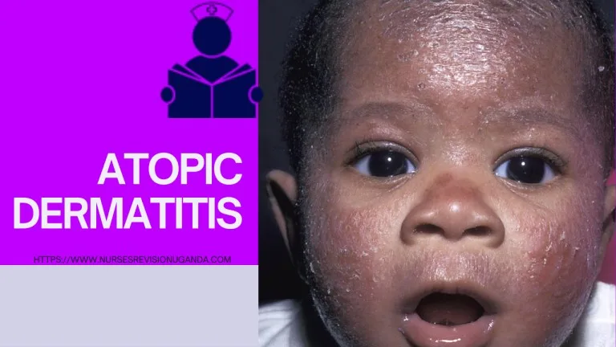
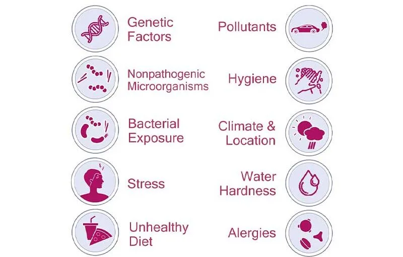
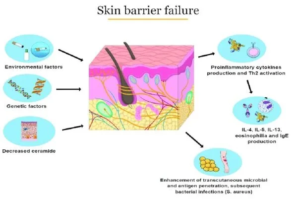
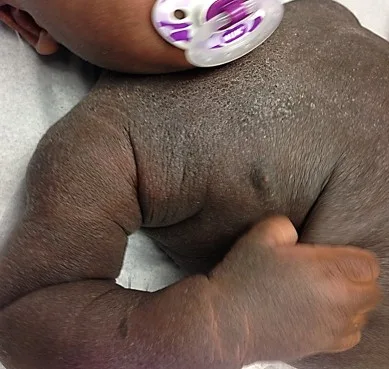
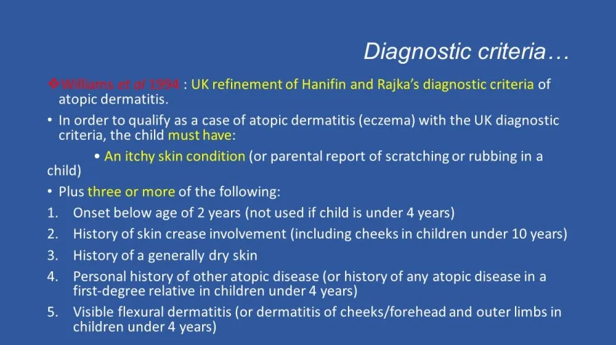
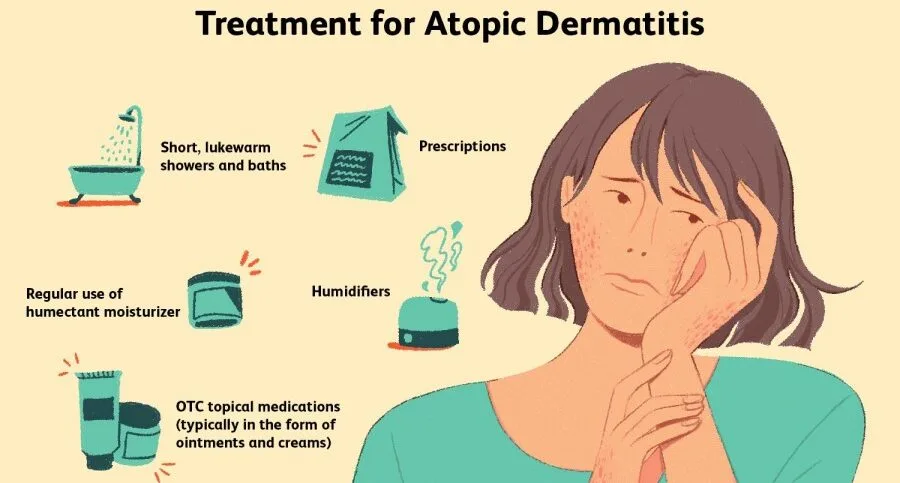
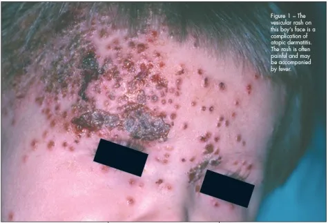

Expanded Nursing Uganda Explanation
Atopic dermatitis should be understood beyond a short definition. Link the concept to patient history, focused assessment, common risks, nursing priorities, documentation and evaluation of outcomes.
01 ATOPIC DERMATITIS.
It results in itchy , red , swollen , and cracked skin . Clear fluid may come from the affected areas, which often thicken over time.
Other names include “ infantile eczema “, “ flexural eczema “, “ prurigo Besnier “, “ allergic eczema “, and “ neurodermatitis “.
While the condition may occur at any age, it commonly starts in childhood with changing severity over the years. In children under one year of age much of the body may be affected.
As children get older , the back of the knees and front of the elbows are the most common areas affected.
In adults the hands and feet are the most commonly affected areas.
Scratching worsens symptoms and affected people have an increased risk of skin infections.
Many people with atopic dermatitis develop hay fever or asthma.
02 Causes and Predisposing Factors of Atopic Dermatitis
The exact cause of atopic dermatitis (AD) is unknown , but several factors are believed to contribute to its development, including genetics, immune system dysfunction, environmental exposures, and difficulties with the permeability of the skin.
- Genetics : AD is strongly influenced by genetics. If one identical twin has AD, there is an 85% chance that the other twin will also have the condition. Many people with AD have a family history of atopy. Atopy is an immediate-onset allergic reaction (type 1 hypersensitivity reaction) that manifests as asthma, food allergies, AD or hay fever.
- Immune system dysfunction : People with AD have an overactive immune system that reacts to allergens and irritants in the environment. This leads to the production of inflammatory chemicals that cause the skin to become red, itchy, and inflamed.
- Environmental exposures : Exposure to certain environmental factors can trigger or worsen AD symptoms. These factors include: Dust mites, Pollen, Pet dander, Smoke, Chemicals, Dry air, Stress. Exposure to certain chemicals or frequent hand washing makes symptoms worse. Those who live in cities and dry climates are more commonly affected.
- Skin barrier defects : People with AD have a defective skin barrier that allows allergens and irritants to penetrate the skin more easily. This leads to inflammation and the development of AD symptoms. Studies have found that abnormalities in the skin barrier of persons with AD are exploited by S. aureus to trigger cytokine expression, thus aggravating the condition.
- Staphylococcus aureus (S. aureus) colonization : S. aureus is a type of bacteria that is commonly found on the skin. In people with AD, S. aureus can colonize the skin and produce toxins that worsen the inflammation and symptoms of AD.
- Calcium carbonate in household water: Studies have found that children who live in areas with high levels of calcium carbonate in their household water are more likely to develop AD. Atopic dermatitis in children may be linked to the level of calcium carbonate or “hardness” of household water.
- Hygiene Hypothesis : According to the hygiene hypothesis , when children are brought up exposed to allergens in the environment at a young age, their immune system is more likely to tolerate them, while children brought up in a modern “sanitary” environment are less likely to be exposed to those allergens at a young age, and, when they are finally exposed, develop allergies. There is some support for this hypothesis with respect to AD.
Triggers of Atopic Dermatitis:
There are several factors that can trigger or worsen symptoms, including:
- Food allergies
- Stress
- Heat and humidity
- Certain fabrics, such as wool and synthetic fibers
- Harsh soaps and detergents
- Perfumes and other fragrances
03 Pathophysiology of Atopic Dermatitis
The disorder is not contagious. The pathophysiology may involve a mixture of type I and type IV -like hypersensitivity reactions.
After a Genetic Predisposition or any other predisposing factor, it leads to Skin Barrier Dysfunction hence a compromised skin barrier allowing irritants to penetrate more easily.
The immune system , especially the T-cells, responds exaggeratedly to these triggers leading to the release of inflammatory chemicals like histamines.
Inflammation occurs in the skin layers, causing redness, swelling, and itching. Scratching the itchy skin worsens the inflammation, leading to a cycle of itching and scratching leading to an imbalance of the skin’s normal flora like Staphylococcus aureus (S. aureus) with an overgrowth of S. aureus, further contributing to inflammation.
Chronic inflammation and persistent scratching can lead to a t hinning of the skin layers which makes the skin more susceptible to infections and environmental damage.
Immune cells release cytokines like Interleukins , in particular, leading to even more inflammation. The combined effects of inflammation, scratching, and immune response result in characteristic eczematous lesions. These include red , dry , and scaly patches of skin. Triggers like allergens, stress, and environmental factors can exacerbate symptoms, leading to flare ups.
04 Signs and symptoms of Atopic Dermatitis
- Dry and scaly skin that spans the entire body, except perhaps the diaper area : Atopic dermatitis can cause dry, scaly skin that affects most of the body, except for areas that are usually covered by a diaper.
- Intensely itchy red, splotchy, raised lesions in the bends of the arms or legs, face, and neck : These lesions are a hallmark symptom of atopic dermatitis and can be extremely itchy. They often appear in the creases of the elbows, knees, and neck.
- Dennie-Morgan infraorbital fold, infra-auricular fissure, and periorbital pigmentation on the eyelids: These are subtle signs of atopic dermatitis that can appear on the eyelids. The Dennie-Morgan infraorbital fold is a crease below the lower eyelid, the infra-auricular fissure is a groove in front of the ear, and periorbital pigmentation is darkening of the skin around the eyes.
- Post-inflammatory hyperpigmentation on the neck, giving it a classic ‘dirty neck’ appearance : This is a darkening of the skin on the neck that can occur after inflammation from atopic dermatitis.
- Lichenification, excoriation, erosion, or crusting on the trunk, indicating secondary infection : Lichenification is a thickening and hardening of the skin, excoriation is scratching of the skin, erosion is a loss of the top layer of skin, and crusting is a buildup of dried fluid on the skin. These signs can indicate that a secondary infection has developed on the skin.
- Flexural distribution with ill-defined edges with or without hyperlinearity on the wrist, finger knuckles, ankle, feet, and hand : Flexural distribution means that the rash appears in the creases of the body, such as the elbows, knees, and wrists. Ill-defined edges means that the rash does not have a clear border. Hyperlinearity is an increase in the lines on the palms of the hands and soles of the feet.
Additionally;
- Dry, itchy skin : Intense itching is a hallmark symptom.
- Redness and inflammation : Skin appears red and inflamed, often with small bumps or blisters.
- Eczema : Dry, scaly patches of skin that can become crusty or oozing.
- Oozing or crusting : Blisters or lesions may break open and release fluid that crusts over.
- Lichenification : Thickening and hardening of the skin due to chronic scratching.
- Skin infections : Due to compromised skin barrier, infections such as staph or yeast can occur.
- Allergic reactions : Atopic dermatitis can be triggered by allergens, leading to flare-ups with symptoms such as hives, swelling, and itching.
05 Diagnosis of Atopic Dermatitis
Atopic dermatitis is diagnosed clinically, meaning that it is diagnosed based on signs and symptoms alone, without special testing. However, several different forms of criteria developed for research have also been validated to aid in diagnosis.
Assessment : This involves a physical examination and a review of the patient’s medical history. The physical examination will focus on the skin, and the doctor will look for signs of atopic dermatitis, such as:
- Dry, itchy skin
- Redness and swelling
- Scaling and crusting
- Lichenification (thickening and leathery appearance of the skin)
They will also ask about the patient’s family history of atopic dermatitis and other allergic conditions. A diagnostic criteria such as the UK Diagnostic Criteria can be used.
UK Diagnostic Criteria
The UK diagnostic criteria for atopic dermatitis are as follows:
- People must have itchy skin, or evidence of rubbing or scratching, plus 3 or more of the following:
- Skin creases are involved.
- Flexural dermatitis of fronts of ankles, antecubital fossae, popliteal fossae, skin around eyes, or neck, (or cheeks for children under 10 years old).
- History of asthma or allergic rhinitis (or family history of these conditions if patient is a child ≤4 years old).
- Symptoms began before age 2 (can only be applied to patients ≥4 years old).
- History of dry skin (within the past year).
- Dermatitis is visible on flexural surfaces (patients ≥age 4) or on the cheeks, forehead, and extensor surfaces (patients<age 4).
Explanation of the Criteria:
- Itchy skin or evidence of rubbing or scratching : This is a hallmark symptom of atopic dermatitis.
- Skin creases are involved : Atopic dermatitis often affects the creases of the body, such as the elbows, knees, and neck.
- Flexural dermatitis : This refers to a rash that appears in the creases of the body.
- History of asthma or allergic rhinitis : Atopic dermatitis is often associated with other allergic conditions, such as asthma and allergic rhinitis.
- Symptoms began before age 2 : Atopic dermatitis typically begins in childhood.
- History of dry skin : Dry skin is a common symptom of atopic dermatitis.
- Dermatitis is visible on flexural surfaces or on the cheeks, forehead, and extensor surfaces: The location of the rash can help to distinguish atopic dermatitis from other skin conditions.
Other Investigations
In some cases, the doctor may order other investigations to help confirm the diagnosis of atopic dermatitis. These investigations may include:
- Allergy testing: Allergy testing can be used to identify the allergens that are triggering the atopic dermatitis. This testing can be done through skin prick tests or blood tests.
- Patch testing : Patch testing is a type of allergy test that is used to identify the allergens that are causing contact dermatitis. This test involves applying small amounts of different allergens to the skin and then observing the skin for signs of a reaction.
Differential Diagnosis
Atopic dermatitis can sometimes be confused with other skin conditions, such as:
- Contact dermatitis
- Seborrheic dermatitis
- Psoriasis
- Eczema
06 Treatment of Atopic Dermatitis
There is no known cure for atopic dermatitis (AD), but treatments can help to reduce the severity and frequency of flares. Treatment involves both preventive measures and medications .
Preventive Measures
- Avoiding triggers : Identifying and avoiding triggers that make the condition worse is an important part of managing AD. Common triggers include wool clothing, soaps, perfumes, chlorine, dust, and cigarette smoke.
- Daily bathing and moisturizing: Bathing daily with lukewarm water and applying a fragrance-free, hypoallergenic moisturizer afterwards can help to keep the skin hydrated and reduce the need for other medications.
- Using mild soaps and detergents: Harsh soaps and detergents can irritate the skin and worsen AD. It is important to use mild, fragrance-free soaps and detergents that are designed for sensitive skin.
- Wearing loose, cotton clothing : Loose, cotton clothing allows the skin to breathe and helps to prevent irritation.
- Managing stress : Stress can trigger AD flares. Finding healthy ways to manage stress, such as exercise, music, or meditation, can help to reduce the frequency and severity of flares.
Medications
- Topical corticosteroids : Topical corticosteroids, such as hydrocortisone , are effective in reducing inflammation and itching. They are typically applied to the affected areas of skin once or twice daily.
- Topical calcineurin inhibitors : Topical calcineurin inhibitors, such as tacrolimus and pimecrolimus , are non-steroidal medications that can be used to treat AD. They are typically used for short periods of time, as they can cause side effects such as skin irritation and burning.
- Systemic immunosuppressants : Systemic immunosuppressants, such as cyclosporine , methotrexate , and azathioprine , are used to suppress the immune system and reduce inflammation. They are typically used for severe AD that does not respond to other treatments.
- Antidepressants and naltrexone: Antidepressants and naltrexone can be used to control pruritus (itchiness).
- Antibiotics : Antibiotics may be used to treat bacterial infections that can develop on the skin of people with AD.
- Phototherapy : Phototherapy involves exposing the skin to ultraviolet (UV) light. This can help to reduce inflammation and improve the skin’s appearance.
Other Treatments
- Moisturizers : Applying moisturizers regularly can help to keep the skin hydrated and reduce the need for other medications.
- Salt water baths : Bathing in salt water can help to soothe the skin and reduce inflammation.
- Dilute bleach baths: Dilute bleach baths have been shown to be effective in managing AD.
- Vitamin D supplementation: There is some evidence that vitamin D supplementation may improve AD symptoms.
- Dietary changes : This is only effective if allergens have been identified in certain foods hence avoiding them.
07 Complications of Atopic Dermatitis
- Skin infections : People with AD are more likely to develop skin infections, such as eczema herpeticum (a viral infection) and impetigo (a bacterial infection).
- Allergic contact dermatitis: AD can increase the risk of developing allergic contact dermatitis, which is a type of skin irritation caused by contact with an allergen.
- Hand eczema: AD can lead to hand eczema, which is a type of eczema that affects the hands. Hand eczema can be difficult to treat and can interfere with daily activities.
- Sleep problems : The itching and discomfort of AD can make it difficult to sleep.
- Psychological problems : AD can lead to psychological problems, such as anxiety, depression, and low self-esteem.
- Increased risk of asthma and hay fever: People with AD are more likely to develop asthma and hay fever.
- Poor quality of life : AD can have a significant impact on quality of life, affecting work, school, and social activities.
- Erythroderma : Erythroderma is a rare but serious complication of AD that causes the skin to become red, swollen, and itchy. Erythroderma can be life-threatening if not treated promptly.
- Lymphoma : People with severe AD are at an increased risk of developing lymphoma, a type of cancer that affects the lymph nodes.
08 Nursing Uganda Clinical Lens
Use Atopic dermatitis as a practical nursing topic, not only a memorized definition. Adapt assessment and care to age, weight, development, caregiver knowledge and family support.
- What to understand first: define atopic dermatitis, identify the normal or expected pattern, then explain what changes when the patient is unwell.
- Why it matters in care: the nurse must recognize risk early, explain findings clearly, document accurately and know when to escalate.
- How to revise it: connect each point to assessment, nursing diagnosis or care problem, intervention, rationale and evaluation.
09 Assessment Guide
- Airway, breathing, circulation, hydration, temperature, feeding, activity and danger signs.
- Weight-based medicines, immunization status, growth, development and caregiver concerns.
- Signs that may be subtle in children, including lethargy, poor feeding, fast breathing or convulsions.
10 Nursing Priorities, Rationales and Outcomes
- Use age-appropriate communication and involve the caregiver.
- Prevent dehydration, hypothermia, medication errors and delayed referral.
- Teach home care, danger signs and follow-up clearly.
The rationale for these priorities is patient safety: nursing actions should prevent deterioration, reduce discomfort, support recovery and create clear evidence for the next caregiver.
- Expected outcome: The child is clinically improving, caregiver instructions are understood and follow-up is arranged.
11 Patient Teaching and Revision Check
- Explain atopic dermatitis in simple language the patient or caregiver can repeat back.
- Teach warning signs, medicine or follow-up instructions, hygiene or lifestyle points where relevant.
- For exams, prepare a short answer using: definition, causes or risk factors, signs, assessment, management, complications and prevention.
- For ward practice, document baseline findings, actions taken, patient response and the plan for review.
Illustrations and Diagrams (8)








Related Video Lectures
Watch nursing lecture videos on YouTube for this topic. Opens in a new tab.
Watch on YouTubeExternal link: YouTube may use its own cookies and terms. Nursing Uganda is not affiliated with YouTube.